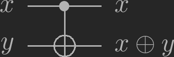
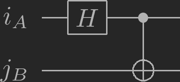
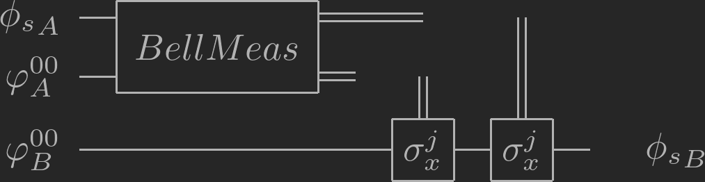
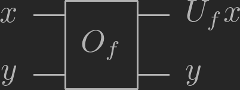
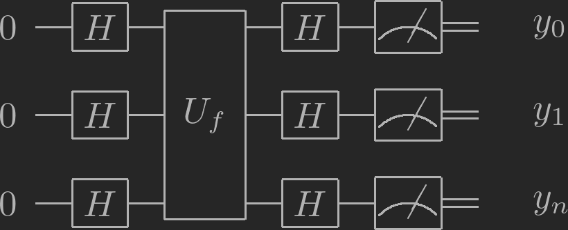

Qutuam Computation
Table of Contents
1 Basic states and operations
1.1 ketbra
- Ket: \[ |a\rangle = \begin{pmatrix} a_{1} \\ a_{2} \end{pmatrix} \]
- Bra: \[\langle b| = |b\rangle^+ = \begin{pmatrix} b_{1} \\ b_{2} \end{pmatrix}^+ = \begin{pmatrix} b_{1}^* & b_{2}^* \end{pmatrix} \]
- Production of Ket and Bra:
\[ \langle b|a \rangle = \begin{pmatrix} b_{1}^* & b_{2}^* \end{pmatrix} \cdot \begin{pmatrix} a_{1} \\ a_{2} \end{pmatrix} = a_1b_1^* + a_2b_2^*\]
1.2 states
\[|0\rangle := \begin{pmatrix} 1 \\ 0 \end{pmatrix} \]
\[|1\rangle := \begin{pmatrix} 0 \\ 1 \end{pmatrix} \] If a measurement will collapse either on |0⟩ or |1⟩, which means |0⟩ or |1⟩ is its eigentstate, we call it as Z-measurement, and denote as \(\sigma_{z}\).
\[|+\rangle := \frac{1}{\sqrt{2}}(|0\rangle + |1\rangle)\]
\[|-\rangle := \frac{1}{\sqrt{2}}(|0\rangle - |1\rangle)\] If a measurement will collapse either on |+⟩ or |-⟩, which means |+⟩ or |-⟩ is its eigentstate, we call it as X-measurement, and denote as \(\sigma_{x}\).
\[|+i\rangle := \frac{1}{\sqrt{2}}(|0\rangle + i|1\rangle)\]
\[|-i\rangle := \frac{1}{\sqrt{2}}(|0\rangle - i|1\rangle)\] If a measurement will collapse either on |+i⟩ or |-i⟩, which means |+i⟩ or |-i⟩ is its eigentstate, we call it as Y-measurement, and denote as \(\sigma_{y}\).
The coefficient has to be \(\frac{1}{\sqrt{2}}\) because of normalisation\(\langle\phi|\phi\rangle = 1\).
1.3 Measurements
for states basis of{ \(x_1\) } and { \(x_2\) }, the measurement of state \(\phi\) on { \(x_{1}\) } is \(\langle x_{1}|\phi\rangle^2\).
1.4 Single Qutantum circuits
bit flip: \(\sigma_{x}|0 \rangle = |1 \rangle\) :
\[\sigma_{x} = \begin{pmatrix} 0 & 1 \\ 1 & 0 \end{pmatrix} \]
- phase flip: \(\sigma_{z}|+ \rangle = |- \rangle\) : \[\sigma_{z} = \begin{pmatrix} 1 & 0 \\ 0 & -1 \end{pmatrix} \]
- bit & phase filp: \(\sigma_{y}|+i \rangle = |-i \rangle\) : \[\sigma_{y} = \begin{pmatrix} 0 & -i \\ i & 0 \end{pmatrix} \]
- Hadamard gate: \(H|0\rangle = |+ \rangle\), \(H|1\rangle = |- \rangle\), \[ H =\frac{1}{\sqrt{2}} \begin{pmatrix} 1 & 1 \\ 1 & -1 \end{pmatrix} \]
- Phase gate: \(S|+ \rangle = |+i\rangle\), \(S|- \rangle = |-i\rangle\) \[ S = \begin{pmatrix} 1 & 0 \\ 0 & i \end{pmatrix} \]
1.5 Multipartite quantum states
we use tensor products to describe multiple states \[|a \rangle \oplus | b \rangle = \begin{pmatrix} a_{1} \\ a_{2} \end{pmatrix} \oplus \begin{pmatrix} b_{1} \\ b_{2} \end{pmatrix} = \begin{pmatrix} a_{1}b_{1} \\ a_{1}b_{2} \\ a_{2}b_{1} \\a_{2}b_{2} \end{pmatrix} \] only such can to described by \(\oplus\) of other states are called uncorrelated, otherweise it's correlated, and when some fully correlated are called entangled.
1.6 XOR gate
\[CNOT = \begin{pmatrix} 1 & 0 & 0 & 0 \\ 0 & 1 & 0 & 0 \\ 0 & 0 & 1 & 0 \\ 0 & 0 & 0 & 1 \end{pmatrix} \]
\Qcircuit @C=1em @R=1em { \lstick{\ket{x}} & \ctrl{1} & \rstick{\ket{x}} \qw \\ \lstick{\ket{y}} & \targ & \rstick{\ket{x \oplus y }} \qw }

Photo Link here{kind=link}
1.7 Bell states
Example of fully correlated states (maximally entangled),
\[| \varphi^{00} \rangle = \frac{1}{\sqrt{2}}( |00 \rangle_{AB} + |11 \rangle_{AB})\] \[| \varphi^{01} \rangle = \frac{1}{\sqrt{2}}( |01 \rangle_{AB} + |10 \rangle_{AB})\] \[| \varphi^{10} \rangle = \frac{1}{\sqrt{2}}( |00 \rangle_{AB} - |11 \rangle_{AB})\] \[| \varphi^{11} \rangle = \frac{1}{\sqrt{2}}( |01 \rangle_{AB} - |10 \rangle_{AB})\]
Create Bell states
\Qcircuit @C=1em @R=1em { \lstick{\ket{i}_A} & \gate{H} & \ctrl{1} & \qw \\ \lstick{\ket{j}_B} & \qw & \targ & \qw }

Photo Link here{kind=link}
1.8 Teleportion
If Alise and Bob share the same bell states \(| \varphi^{00}_{AB} \rangle = \frac{1}{\sqrt{2}}( |00 \rangle_{AB} + |11 \rangle_{AB})\), Now Alias want to send stetas \(|\phi \rangle_{S} = \alpha |0 \rangle_{S} + \beta|1 \rangle_{S}\) to Bob,
\[ \varPhi = |\phi \rangle_{S} \oplus \varphi^{00}_{AB} \rangle = (\alpha |0 \rangle_{S} + \beta|1 \rangle_{S})\oplus \frac{1}{\sqrt{2}}( |00 \rangle_{AB} + |11 \rangle_{AB})\]
\[ \varPhi = \frac{1}{\sqrt{2}} ( \alpha |000 \rangle_{SAB} + \alpha|011 \rangle_{SAB} + \beta|100 \rangle_{SAB} + \beta|111 \rangle_{SAB} ) \] \[ \varPhi = \frac{1}{2\sqrt{2}} ( \alpha |000 \rangle_{SAB} + \beta |001 \rangle_{SAB} + \alpha|110 \rangle_{SAB} + \beta|111 \rangle_{SAB} + \alpha |011 \rangle_{SAB} + \alpha |101 \rangle_{SAB} + \beta|010 \rangle_{SAB} +\beta|100 \rangle_{SAB} + \alpha |000 \rangle_{SAB} - \beta |001 \rangle_{SAB} - \alpha|110 \rangle_{SAB} + \beta|111 \rangle_{SAB} + \alpha |011 \rangle_{SAB} - \alpha |101 \rangle_{SAB} - \beta|010 \rangle_{SAB} +\beta|100 \rangle_{SAB}) \] \[ \varPhi = \frac{1}{2\sqrt{2}} [(|00 \rangle_{SA} + |11\rangle_{SA}) ]\oplus (\alpha |0\rangle_B + \beta|1\rangle_B) + (|01 \rangle_{SA} + |10\rangle_{SA}) ]\oplus (\alpha |1\rangle_B + \beta|0\rangle_B) \\ +(|00 \rangle_{SA} - |11\rangle_{SA}) ]\oplus (\alpha |0\rangle_B - \beta|1\rangle_B) + (|01 \rangle_{SA} - |10\rangle_{SA}) ]\oplus (\alpha |1\rangle_B - \beta|0\rangle_B) ] \] \[ \varPhi = \frac{1}{2\sqrt{2}} [| \varphi^{00}_{AB} \rangle \oplus |\phi \rangle_{B} + | \varphi^{01}_{AB} \rangle \oplus \sigma_x |\phi \rangle_{B}+ |\varphi^{10}_{AB} \rangle \oplus \sigma_z |\phi \rangle_{B} + | \varphi^{11}_{AB} \rangle \oplus \sigma_x \sigma_z |\phi \rangle_{B}] \]
- Alice preforms a measurement in the Bell basis
- she send her classical output (i,j) to Bob
- Bob apply \(\sigma_{z}^{i}\sigma_{x}^{j}\) to get the orignal \(|\phi\rangle\).
\Qcircuit @C=1em @R=.7em { \lstick{\ket{\phi_s}_A} & \multigate{1}{Bell Meas} & \cw & \cw & \cwx[2] \\ \lstick{\ket{\varphi^{00}_A}} & \ghost{Bell Meas} & \cw & \cwx[1] \\ \lstick{\ket{\varphi^{00}_B}} & \qw & \qw & \gate{\sigma_x^j}& \gate{\sigma_x^j }& \qw & \rstick{\ket{\phi_s}_B} }

Photo Link Here
{kind=link}
2 Deutsche-Jose
2.1 Bit oracle

Photo Link here{kind=link}
\(O_{f}|x\rangle |y\rangle = |x\rangle |y \oplus f(x)\rangle\), \(U_{f}\) : phase oracle, which is independt of y, \[U_{f}|x\rangle = (-1)^{f(x)}|x\rangle\].
2.2 Hadamard on n qubits
for \(x \in \{0, 1\}\), \[ |x\rangle -> H -> |y\rangle\] , \[ |y\rangle = \frac{1}{\sqrt{2}} \sum_{k \in \{0, 1 \}} (-1)^{k \cdot x}|k\rangle\]
for for \(x \in \{0, 1\}^{n}\), \[ |x_{0}\rangle -> H -> |y_{0}\rangle\] , \[ |x_{1}\rangle -> H -> |y_{1}\rangle\] , \[ |x_{2}\rangle -> H -> |y_{2}\rangle\] , \[ |y\rangle = H^{\otimes n} = \frac{1}{\sqrt{2^{n}}} \sum_{k \in \{0, 1 \}^{n}} (-1)^{k \cdot x}|k\rangle\]
2.3 Deutsche Jose algorithm
\Qcircuit @C=1em @R=1em { \lstick{\ket{0}} & \gate{H} & \multigate{2}{U_f} & \gate{H} & \meter & \cw & \rstick{\ket{y_0}} \\ \lstick{\ket{0}} & \gate{H} & \ghost{U_f} & \gate{H} & \meter & \cw & \rstick{\ket{y_1}} \\ \lstick{\ket{0}} & \gate{H} & \ghost{U_f} & \gate{H} & \meter & \cw & \rstick{\ket{y_n}} }

Photo Link here{kind=link}
Proof: \[|\varphi_{0}\rangle = |0000.....0\rangle^{\otimes n}\]
\[|\varphi_{1} \rangle = H^{\otimes n} |\varphi_{0}\rangle = \frac{1}{\sqrt{2^{n}}} \sum_{x \in \{0, 1 \}^{n}} (-1)^{x \cdot \varphi_{0}}|x\rangle\] because \(x \cdot \varphi_{0} = 0\), so , \[|\varphi_{1} \rangle = \frac{1}{\sqrt{2^{n}}} \sum_{x \in \{0, 1 \}^{n}} |x\rangle\]
\[ |\varphi_{2}\rangle = U_{f}|\varphi_{1} \rangle = \frac{1}{\sqrt{2^{n}}} \sum_{x \in \{0, 1 \}^{n}} U_{f} |x\rangle = \frac{1}{\sqrt{2^{n}}} \sum_{x \in \{0, 1 \}^{n}} (-1)^{f(x)} |x\rangle\]
\[|\varphi_{3} \rangle = H^{\otimes n}|\varphi_{2} \rangle = \frac{1}{\sqrt{2^{n}}} \sum_{x \in \{0, 1 \}^{n}} (-1)^{f(x)} H^{\otimes n} |x\rangle\] \[|\varphi_{3} \rangle = \frac{1}{2^{n}} \sum_{x \in \{0, 1 \}^{n}} (-1)^{f(x)} \sum_{k \in \{0, 1\}^{n}} (-1)^{k \cdot x} |k\rangle\] \[ |\varphi_{3} \rangle = = \sum_{k \in \{0, 1\}^{n}} [ \frac{1}{2^{n}} \sum_{x \in \{0, 1 \}^{n}} (-1)^{f(x) + k \cdot x}] \cdot |k\rangle = \sum_{k \in \{0, 1\}^{n}} C_{k} |k\rangle\]
The Probability to measure the Zero( \(\varphi_{0}\)) string is: \[P[y=|0000...0\rangle] = | \langle 00000...0|\varphi_{3}\rangle |^{2} =| \sum_{k \in \{0, 1\}^{n}} C_{k} \langle 0000..0 |k\rangle|^{2} = |C_{000..0}|^{2}\] \[P = | \frac{1}{2^{n}} \sum_{x \in \{0, 1\}^{n}} (-1)^{f(x)}|^{2}\] \(P=1\) if f is constant, and \(P=0\) if f is balanced